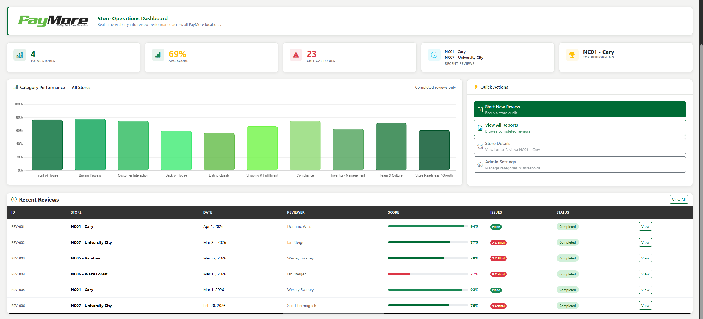

Peer Review 1
Steiger, Ian

- When clicking the link and entering the username and password, the user gains access to the website, which is a little difficult to find as you need to go to the users Project Overview Page.
- File naming is consistent and uses lowercase letters, following the assignment guidelines.
- The website is well designed and consistent in its layout and styling. The text is strong and easy to read, making navigation straightforward.
- Demosrtrates the CRAP principles of Contrast, Repetition, Alignment, and Proximity effectively, creating a visually appealing that allows for easy navigation and a good user experience.
- Page includes a header, main, and footer content, which follows the required page layout
- The header includes the PayMore logo, which is consistently used throughout the website.
- Main Page has a h2 element that does not include anything with the brand/logo
- Websites slogan is consitently used across the website, reinforcing the identity of the brand and its purpose to the customers.
- Footer needs HTML and CSS validation links in the footer to fully match the checklist requirements.
- Overall, the website is very well designed and goes above and beyond in user friendliness and experience. This is an exremely well done website and with some minor improvements will meet all expectations!